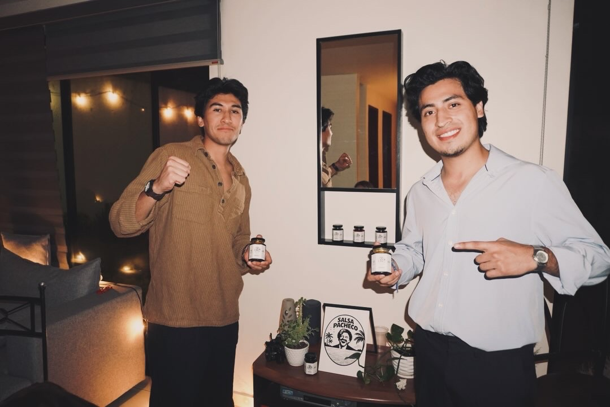
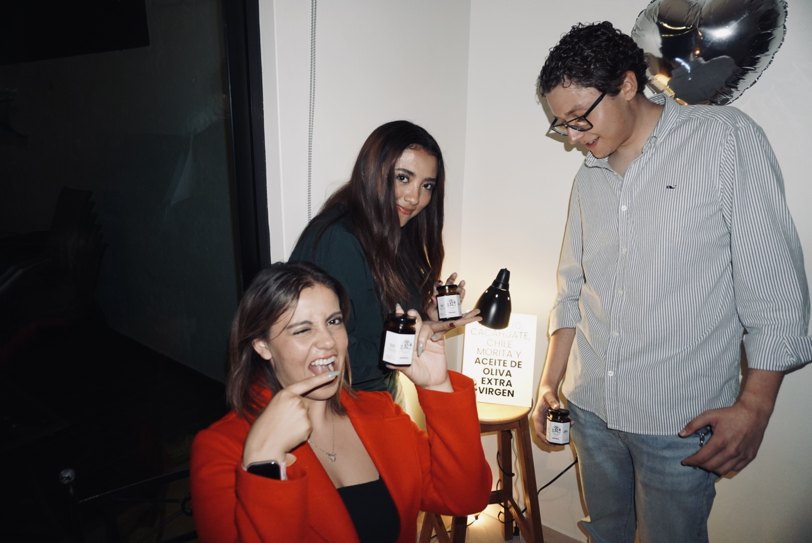
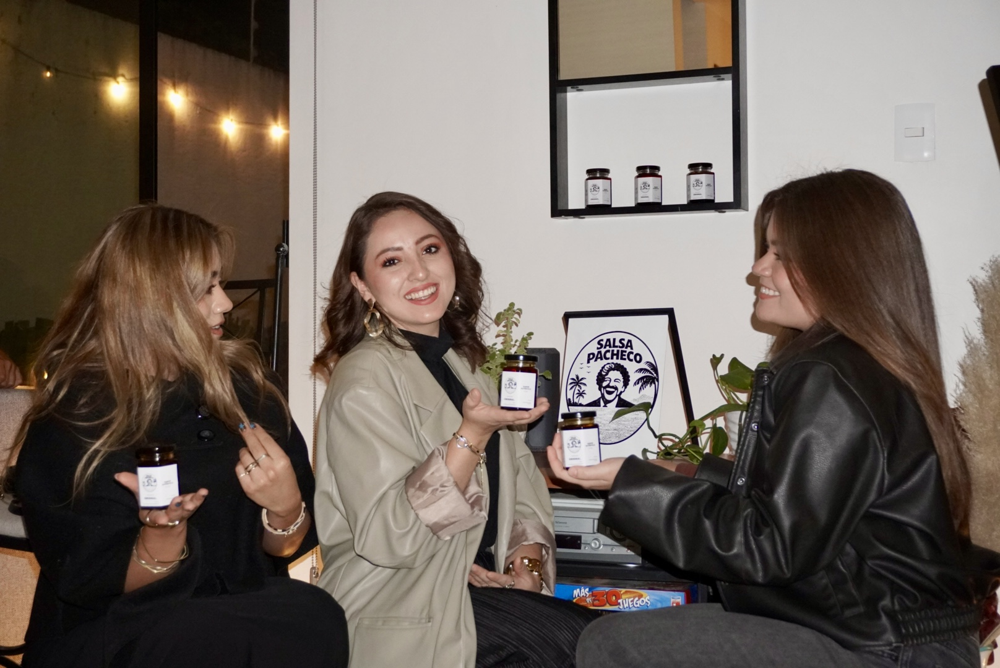
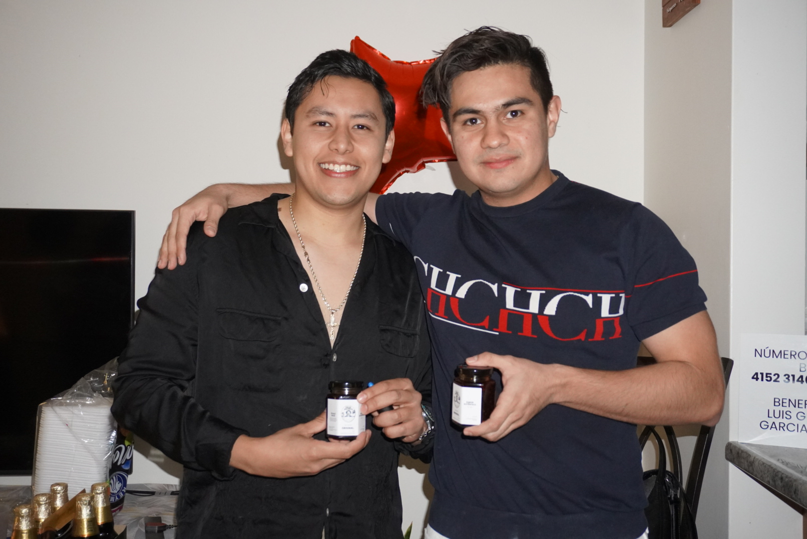
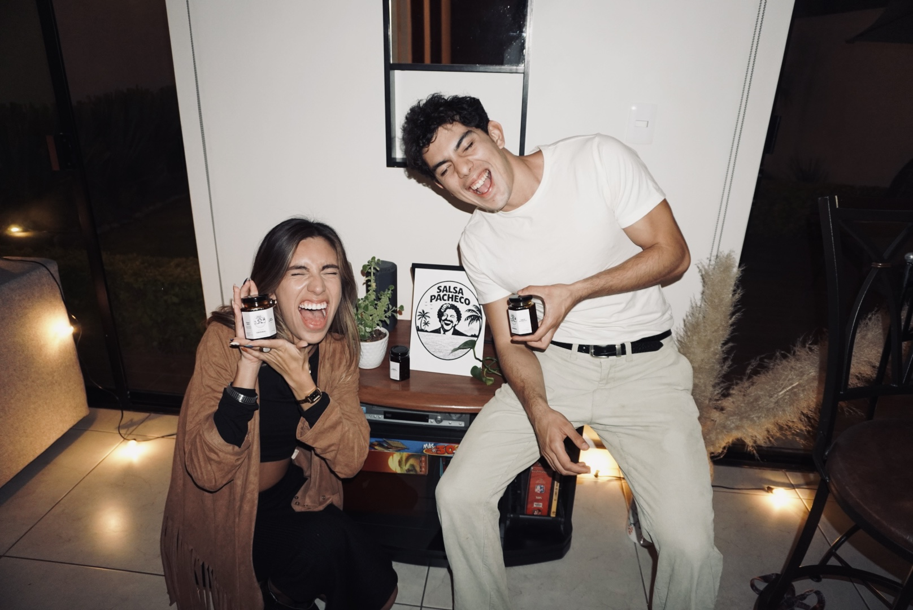
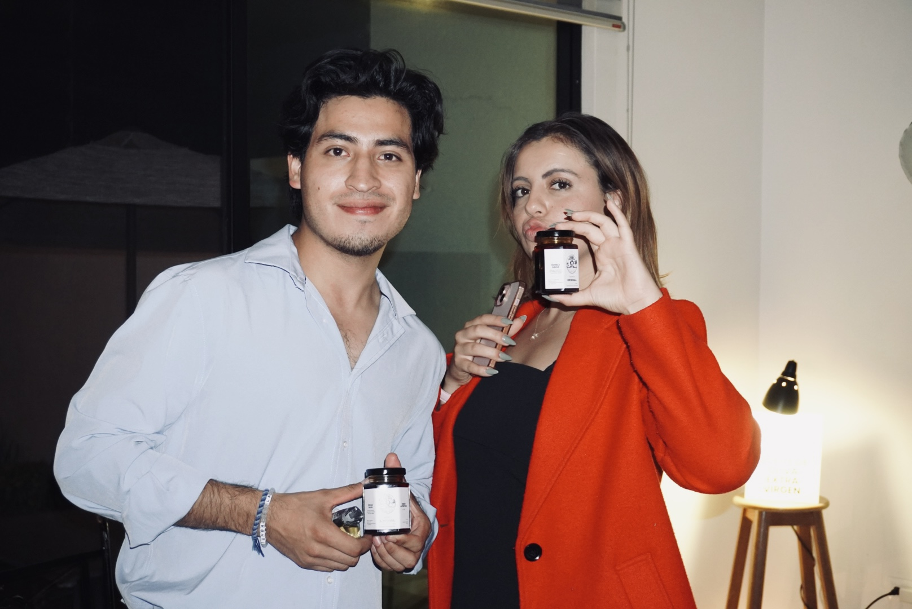
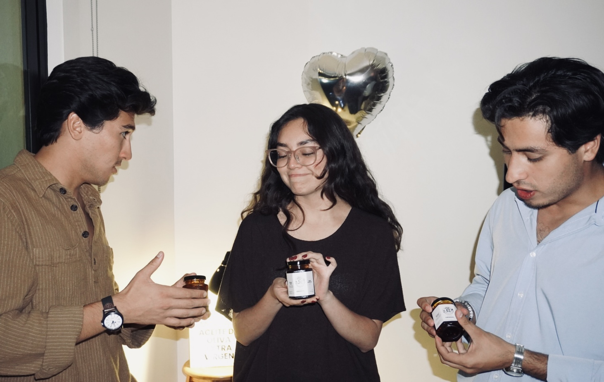

SALSASPACHECO.
Una idea.
(convertida en algo real).
ARQUITECTURA / DISEÑO / EMPRENDIMIENTO / TRABAJO FÍSICO /
Este proyecto conecta varias cosas que me gusta hacer.

DE LA
IDEA A
la mesa.
Me gusta probar ideas y trabajar en cómo convertirlas en algo que puedas ver, usar o vivir, siempre buscando que la experiencia sea agradable. Salsas Pacheco es una de esas ideas.
Quise desarrollar una salsa macha con aceite de oliva y una identidad propia. Desde la receta y el empaque hasta la comunicación y las ventas, me interesa participar en todo el proceso y aprender mientras la marca va tomando forma.
PROYECTO INDEPENDIENTE / DESARROLLO DE PRODUCTO / IDENTIDAD VISUAL / EXPERIENCIA
EN
PERSONA.
Las fotografías de Salsas Pacheco son parte de la historia de la marca: personas, momentos y el producto compartido en la vida real.







SIETE
(momentos).
Una marca, muchas historias.
Siete fotografías originales. No son mockups, ni imágenes creadas con inteligencia artificial. Son encuentros que forman parte del proyecto.
LO QUE
(se vive).
Un pequeño registro en video de la marca fuera del diseño. Lo que me interesa de proyectos como este es que las ideas no se quedan en una pantalla: terminan encontrándose con otras personas.
VIDEO ORIGINAL / FORMATO VERTICAL / AUDIO INCLUIDO